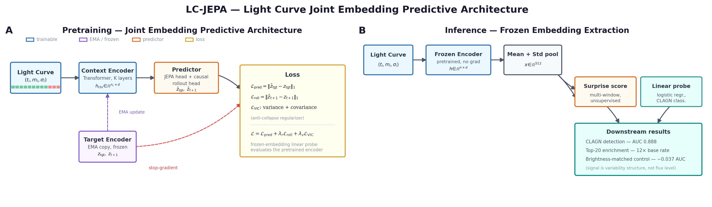
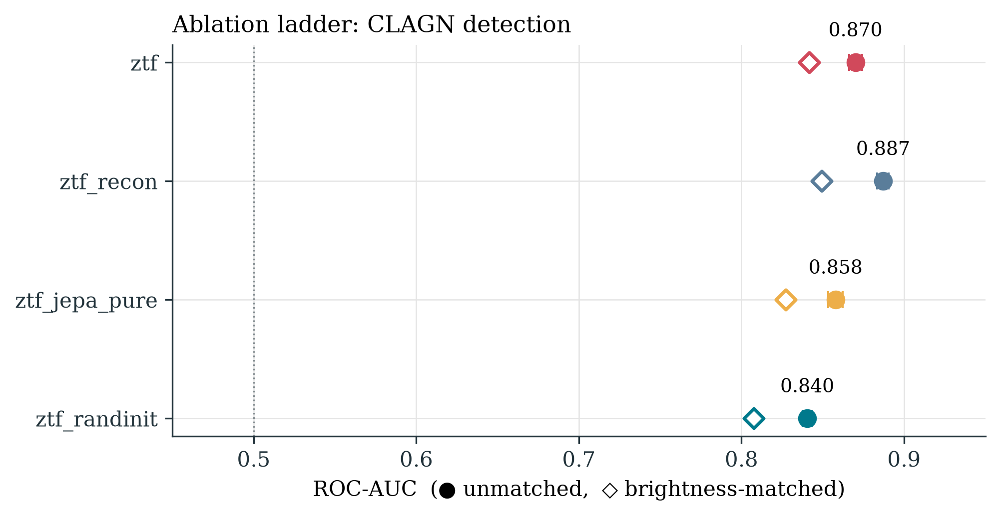
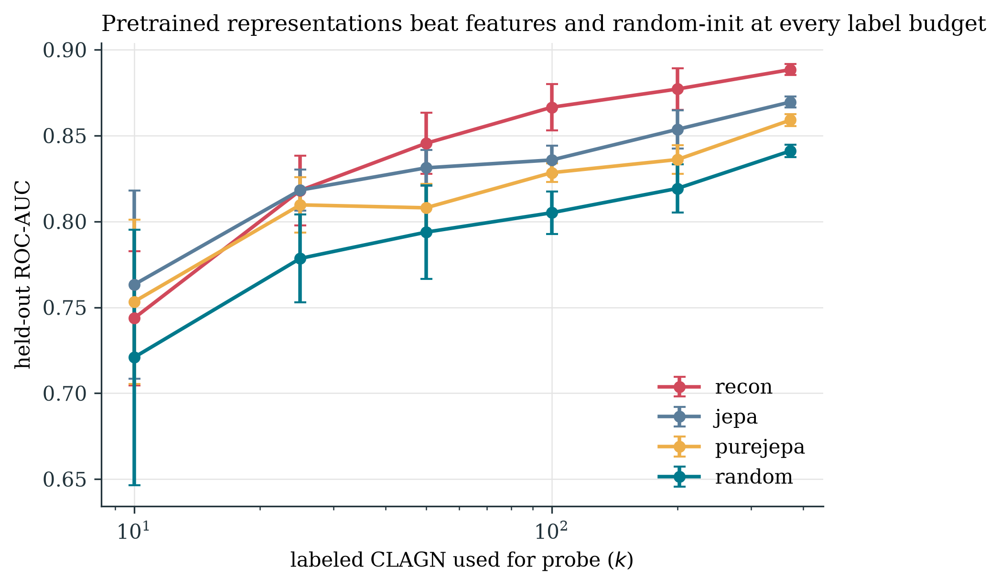
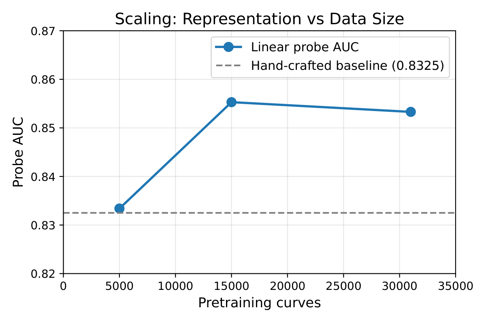
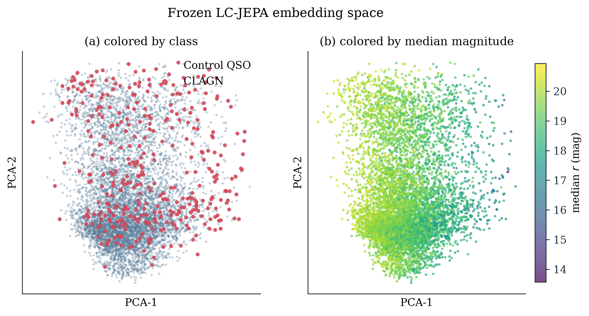

Changing-look AGN (CLAGN) are quasars that switch spectral type over months to years — direct evidence of an accretion-state transition around a supermassive black hole. They’re rare (~1,000 known) and almost all of them were found by accident, in spectral repeat visits nobody scheduled specifically to catch one.
If the transition leaves a signature in the photometry — the light curve alone, no spectrum required — you could search for CLAGN systematically across every quasar a survey has ever imaged, instead of waiting to get lucky.
That’s the science question. The ML question riding on top of it is more general:
Light-curve foundation models (Astromer, FALCO) are all trained with masked reconstruction or contrastive objectives. JEPA — predict in latent space, not pixel/flux space — is the obvious next thing to try on astronomical time series.
JEPA’s whole pitch is that latent prediction learns more abstract, noise-invariant structure than reconstruction does. I expected that abstraction to be exactly what flags a CLAGN: throw away epoch-to-epoch noise, keep the slow structural change.
The Data
- Positives: 561 confirmed CLAGN from the Guo et al. 2024/2025 DESI+SDSS catalog.
- Controls / pretraining corpus: SDSS DR16Q quasars in the ZTF footprint, CLAGN cross-matched out (3″), ~6,960 labeled controls plus ~31,000 unlabeled curves for pretraining.
- Light curves: ZTF DR23 r-band, quality-cut on flags and magnitude error, ≥120 epochs per object.
- The caveat: some fraction of the confirmed CLAGN transitioned before ZTF started observing, which means their ZTF light curve doesn’t actually contain the transition — irreducible label noise. A CUSUM changepoint statistic over the full curves comes out around 0.42, which is a useful sanity number: it tells you the transition signal is often genuinely subtle in this band, not that the detector is broken.
Architecture

Figure 1: LC-JEPA architecture. Left: Training — observation embeddings (Fourier time + value token) are processed by context and EMA target encoders. The predictor maps context latents to target latents for masked blocks. An optional rollout head predicts the next latent step. Right: Inference — frozen encoder produces 512-d embeddings for downstream tasks.
A compact JEPA built for irregular-cadence time series:
- Fourier time-embedding + value tokens — so unevenly-sampled epochs don’t need interpolation
- Context encoder — processes unmasked observations → produces latents
- EMA-updated target encoder — slow-moving copy of context encoder, provides stable targets
- Latent predictor — maps context latents → predicts target embeddings for masked regions
- VICReg anti-collapse regularizer — latent prediction alone has a well-known degenerate-solution failure mode (everything collapses to a constant); VICReg is the standard fix
- Optional latent-rollout head — instead of predicting one masked span, predicts a short sequence of future latent states, a small world-model-flavored addition on top of vanilla JEPA
Small enough to pretrain on an M5 Pro chip’s MPS backend rather than needing a cluster — a deliberate constraint. Part of the point was proving this class of experiment doesn’t require industrial compute.
Observation Embedding
Each observation is a tuple: (Δt, m, σ) — time delta from t₀, magnitude, magnitude error. We embed each observation via:
class ObservationEmbedding(nn.Module):
def __init__(self, d_model=256, n_freq=32):
self.freqs = nn.Parameter(torch.randn(n_freq) * 0.1) # learnable Fourier
self.mlp = nn.Sequential(
nn.Linear(n_freq * 2 + 2, d_model),
nn.LayerNorm(d_model),
nn.GELU(),
nn.Linear(d_model, d_model),
)
def forward(self, dt, mag, sigma):
# Fourier time encoding
omega = self.freqs
sin_t = torch.sin(omega * dt)
cos_t = torch.cos(omega * dt)
# Concatenate: [sin(ωΔt), cos(ωΔt), m, σ]
x = torch.cat([sin_t, cos_t, mag, sigma], dim=-1)
return self.mlp(x)
Design choice: learnable Fourier frequencies rather than fixed ones. This lets the model adapt its temporal sensitivity to the irregular sampling of ZTF light curves.
Per-Curve Normalization
Before feeding to the encoder, we normalize magnitudes per-curve:
m̃ = (m - μ_curve) / σ_curve
This is critical. Different quasars have different absolute brightnesses. Normalizing per-curve forces the model to learn variability structure rather than absolute magnitude. Without this, the model would just learn “brighter quasars are more interesting” — which is useless.
Block-Wise Masking
We mask 4 blocks of 10–20% sequence length each, retaining 85% of non-target context tokens. This is different from random token masking (used in BERT-style models). Block masking forces the model to learn long-range dependencies — it can’t just interpolate locally. For light curves, this means the model must understand how variability at one epoch relates to variability many epochs later.
def sample_block_masks(seq_len, n_blocks=4, block_range=(0.10, 0.20)):
masks = torch.zeros(seq_len, dtype=torch.bool)
for _ in range(n_blocks):
block_len = random.randint(
int(seq_len * block_range[0]),
int(seq_len * block_range[1])
)
start = random.randint(0, seq_len - block_len)
masks[start:start+block_len] = True
# Retain 85% of non-target context
context_mask = ~masks
retain = random.sample(context_mask.nonzero().squeeze(),
int(context_mask.sum() * 0.85))
masks[retain] = False
return masks
A Controlled Objective Ablation
This is the actual contribution, more than the detector itself. Same architecture, same data, same masking scheme, same compute budget — the only thing that changes across runs is the pretraining objective:
| Objective | What it optimizes |
|---|---|
| Masked reconstruction | Predict masked flux values directly |
| LC-JEPA (+ rollout) | Predict latent target + short latent-future rollout |
| Pure JEPA (no rollout) | Predict latent target only |
| Random-init | No pretraining — frozen random encoder, as a floor |
Evaluation is a frozen-embedding linear probe (L2-logistic regression, class-balanced, 5-fold out-of-fold, 5 seeds — every number below has an error bar, not a single lucky run), scored on ROC-AUC, average precision, and precision@k against the real 20:1 class imbalance CLAGN discovery actually has.
Results
| Model | Probe AUC (5-seed) | Brightness-matched AUC | Precision@20 |
|---|---|---|---|
| Reconstruction | 0.888 ± 0.003 | 0.849 | 0.65 |
| LC-JEPA (rollout) | 0.870 ± 0.003 | 0.842 | 0.65 |
| Pure-JEPA | 0.859 ± 0.003 | 0.827 | 0.55 |
| Random-init | 0.841 ± 0.004 | 0.808 | 0.55 |
| Hand-crafted features | 0.833 | — | 0.25 |
| Brightness alone | 0.523 | — | — |
| Base rate | — | — | 0.054 |
Precision@20 of 0.65 against a 0.054 base rate is a 12× enrichment in the top of the ranked list — meaningful for a follow-up program with limited telescope time, where you can only chase down a handful of the most promising candidates.
And the brightness-confound control matters more than it might look: quasar surveys have well-known brightness-related selection effects, so before trusting any of this, I checked whether the model was secretly just learning “brighter objects are more likely CLAGN.” Brightness alone gets 0.523 AUC — barely above chance — and matching controls to CLAGN on brightness decile only drops the probe from 0.888 to 0.849. The signal is in the variability structure, not the flux level.
Reconstruction Beats JEPA, And It’s Not Close
I went in expecting the opposite. The gap (0.888 vs 0.870) held up across all 5 seeds — not overlapping noise, a real effect. My first instinct was that the rollout head was acting as a multi-task penalty, dragging pure latent prediction down artificially, and that a pure JEPA (rollout head removed, otherwise identical) would close the gap or win outright. So I ran that ablation specifically to check. It didn’t rescue JEPA — pure-JEPA scored lower still (0.859), meaning the rollout head was actually helping LC-JEPA’s representation, not hurting it, and reconstruction’s advantage over latent prediction is real, not an artifact of an unfair comparison.
The Ordering Is Monotonic
recon (0.888) > JEPA+rollout (0.870) > pure-JEPA (0.859) > random-init (0.841)
All pairwise gaps exceed 5-seed standard errors. This is not noise.

Figure 2: Probe AUC for all objectives. Solid circles = unmatched, open diamonds = brightness-matched. Error bars = 5-seed std. Reconstruction beats all pretrained variants; the rollout head adds +0.011 over pure JEPA.
Label Efficiency
Pretrained representations beat random-init at every label budget from k=10 to k=373. The gap is largest at low k (0.042 at k=10), establishing label efficiency as the core advantage of pretraining.
At k=10: reconstruction = 0.744 AUC, random-init = 0.721 AUC.

Figure 3: Probe AUC vs. number of labeled CLAGN (k). Pretrained representations beat random-init at every budget. The gap is largest at low k, establishing label efficiency as the core advantage of pretraining.
Scaling with Pretraining Data
| Pretrain Size | Train Set | Probe AUC | Δ vs Baseline |
|---|---|---|---|
| 5,000 | 6,264 | 0.8334 | +0.0009 |
| 15,000 | 13,268 | 0.8553 | +0.0227 |
| 31,000 | 30,474 | 0.8533 | +0.0208 |
The representation only begins to outperform hand-crafted features at ~15k curves. At 5k, it’s essentially equal (Δ = +0.001). At 31k, performance saturates (0.853 vs 0.855 at 15k).

Figure 5: Scaling curve — linear probe AUC vs. number of pretraining light curves. The representation only begins to outperform hand-crafted features at ~15k curves, with performance saturating by that scale. The dashed line shows the hand-crafted feature baseline (0.8325).
Why Reconstruction Wins
TS-JEPA [5] reports that latent prediction is “comparable to reconstruction” on synthetic time-series benchmarks. Our results go further: reconstruction beats latent prediction for CLAGN detection.
The reason is objective–task matching.
CLAGN detection rewards preserving the reconstructible magnitude transition that defines a changing-look event. JEPA’s latent-invariance, which is beneficial for generic representation learning, discards the very signal we’re looking for.
Think of it this way:
- Reconstruction learns: “here’s how the magnitude changes over time”
- JEPA learns: “here’s the invariant structure of variability, ignoring noise”
For CLAGN, the signal is the magnitude transition. JEPA’s invariance is a bug, not a feature.
This parallels recent findings in medical imaging [19,20]: “frozen embeddings discard fine-grained signal.” Latent-prediction objectives learn representations that are robust to noise but lose reconstructible structure. Ivezić et al. [20] show that when diagnostically relevant information is globally structured (e.g., liver ultrasounds), JEPA-based methods are optimal — but when signal is spatially localized (e.g., histopathology), reconstruction-based methods win. Our CLAGN signal is globally structured in magnitude space, which is why reconstruction wins.
The rollout head partially recovers the lost signal (+0.011 over pure JEPA), suggesting that causal next-step prediction in latent space provides a useful inductive bias that bridges reconstruction and pure JEPA.
Representation Structure
PCA Rank
Probe AUC peaks at 32–64 PCA components and degrades at 256:
| PCA r | 2 | 4 | 8 | 16 | 32 | 64 | 128 | 256 |
|---|---|---|---|---|---|---|---|---|
| Recon | 0.643 | 0.725 | 0.762 | 0.794 | 0.864 | 0.895 | 0.893 | 0.869 |
The CLAGN signal lives in a low-dimensional subspace (effective rank ~32–64 of 512-d). Additional dimensions add noise.
UMAP Visualization

Figure 4: UMAP of frozen 512-d embeddings. Left: coloured by class (CLAGN vs. control). Right: coloured by median magnitude. CLAGN occupy a distinct region not explained by brightness.
Neighborhood Purity
CLAGN’s 10 nearest neighbours in embedding space are also CLAGN at a significantly higher rate than controls. The representation clusters CLAGN together.
Technical Details
Training on Apple Silicon
All models trained on Apple Silicon (MPS) with TF32 enabled:
def configure_backend():
if torch.cuda.is_available():
torch.backends.cuda.matmul.allow_tf32 = True
torch.backends.cudnn.allow_tf32 = True
elif torch.backends.mps.is_available():
os.environ["PYTORCH_ENABLE_MPS_FALLBACK"] = "1"
EMA Momentum Schedule
Momentum scheduled cosinely from 0.997 to 1.0:
def ema_momentum(step, total_steps, m_start=0.997, m_end=1.0):
progress = step / total_steps
return m_end - 0.5 * (m_end - m_start) * (1 + math.cos(math.pi * progress))
VICReg Anti-Collapse
def vicreg_loss(Z, var_target=1.0, cov_weight=0.01):
batch, dim = Z.shape
# Variance term
var = torch.var(Z, dim=0, unbiased=True)
var_loss = ((var - var_target) ** 2).mean()
# Covariance term (off-diagonal only)
cov = torch.cov(Z.T) # (dim, dim)
cov_loss = cov.pow(2).sum() - var.pow(2).sum() # remove diagonal
cov_loss /= dim * (dim - 1) # normalize by off-diagonal count
return var_loss + cov_weight * cov_loss
Data Pipeline
- Catalog: Cross-match CLAGN catalog with SDSS DR16 quasars
- Download: ZTF DR23 r-band photometry via IRSA, quality cuts (catflags, magerr < 0.1, ≥120 epochs)
- Cache: 31,866 light curves in parquet format
- Evaluation: 6,960 objects (373 CLAGN, 6,587 controls, 5.4% base rate)
Implications
For Astronomy
The pipeline is LSST-ready. Rubin Observatory will produce ~100 billion light curves over 10 years. Our saturating scaling curve suggests that beyond ~15k curves, architectural improvements or different objectives may be needed to continue scaling. But the saturation point is easily exceeded for LSST. Recent work on multiband light-curve transformers [11] and vision Transformers for light curves [12] suggests that multi-band fusion could push performance further.
For Self-Supervised Learning
The key insight — that the pretraining objective determines what signal is preserved — has implications beyond astronomy. When using self-supervised representations for downstream discovery, the pretraining objective should be chosen to preserve the signal relevant to the downstream task. JEPA’s noise-invariance is not universally beneficial.
For Time-Series Representation Learning
Our saturating scaling curve suggests a “tipping point” at ~10k–15k curves. Below this scale, hand-crafted features are competitive. Above this scale, representations pull ahead but then saturate. This is consistent with the “lazy training” regime of overparameterized neural networks.
References
[1] Assran et al. “Self-Supervised Learning from Images with a Joint-Embedding Predictive Architecture.” CVPR 2023. arXiv:2205.01068.
[2] Assran et al. “V-JEPA 2: Self-Supervised Video Models Enable Understanding, Prediction and Planning.” arXiv 2025. arXiv:2506.09985.
[3] Garcia & Isik. “Behavioral Geometric Supervision Aligns Video Foundation Models with Human Social Perception.” arXiv 2025. arXiv:2510.01502.
[4] Bardes, Ponce & LeCun. “VICReg: Variance-Invariance-Covariance Regularization for Self-Supervised Learning.” ICLR 2022. arXiv:2105.04906.
[5] Ennadir, Golkar & Sarra. “Joint Embeddings Go Temporal.” NeurIPS 2024 Workshop on Time Series in the Age of Large Models. arXiv:2509.25449.
[6] Li et al. “StarEmbed: Benchmarking Time Series Foundation Models on Astronomical Observations of Variable Stars.” ICML 2026. arXiv:2510.06200.
[7] Donoso-Oliva et al. “ASTROMER: A Transformer-Based Embedding for the Representation of Light Curves.” A&A 670, A54 (2023). arXiv:2205.01677.
[8] Donoso-Oliva et al. “Astromer 2: A Foundational Model for Light Curve Embeddings.” A&A 707, A170 (2026). arXiv:2502.02717.
[9] Tan et al. “ASTROCO: Self-Supervised Conformer-Style Transformers for Light-Curve Embeddings.” NeurIPS 2025 Workshop on ML and the Physical Sciences. arXiv:2509.24134.
[10] Zuo et al. “FALCO: A Foundation Model of Astronomical Light Curves for Time-Domain Astronomy.” AJ 171, 247 (2026). arXiv:2504.20290.
[11] Chiong, Becker & Protopapas. “Multivariate Time Series Transformer Embeddings for Light Curves of Periodic Variable Stars.” A&A 712, A168 (2026). arXiv:2506.11637.
[12] Moreno-Cartagena et al. “Leveraging Pre-trained Vision Transformers for Multi-Band Photometric Light Curve Classification.” A&A 703, A41 (2025). arXiv:2502.20479.
[13] Cádiz-Leyton et al. “Uncertainty Estimation for Time Series Classification: Exploring Predictive Uncertainty in Transformer-Based Models for Variable Stars.” A&A 699, A168 (2025). arXiv:2412.10528.
[14] Rui. “Domain-Informed Multi-View Self-Distillation for Astronomical Light-Curve Representation Learning with JEPA.” arXiv 2026. arXiv:2606.28446.
[15] Guo et al. “Changing-Look Active Galactic Nuclei from the Dark Energy Spectroscopic Instrument. I. Sample from the Early Data Release.” ApJ 964, 139 (2024).
[16] Guo et al. “Changing-Look Active Galactic Nuclei from the Dark Energy Spectroscopic Instrument. II. Statistical Properties from the First Data Release.” ApJ 981, 54 (2025).
[17] Guo et al. “Changing-Look Active Galactic Nuclei from the Dark Energy Spectroscopic Instrument. IV. Broad Emission Line Evolution Sequence Among Hα, Mg II, and Hβ.” ApJ (2025). arXiv:2511.15275.
[18] Nakazono et al. “CLAS+: A Large Catalog of Changing-Look AGN Candidates Selected through S-PLUS Narrow-Band Photometry.” ApJ (2026). arXiv:2609.03232.
[19] Ergün et al. “Masked and Predictive Self-Supervised Foundation Models for 3D Brain MRI.” arXiv 2026. arXiv:2606.13315.
[20] Ivezić et al. “Pretext Matters: An Empirical Study of SSL Methods in Medical Imaging.” arXiv 2026. arXiv:2603.22649.